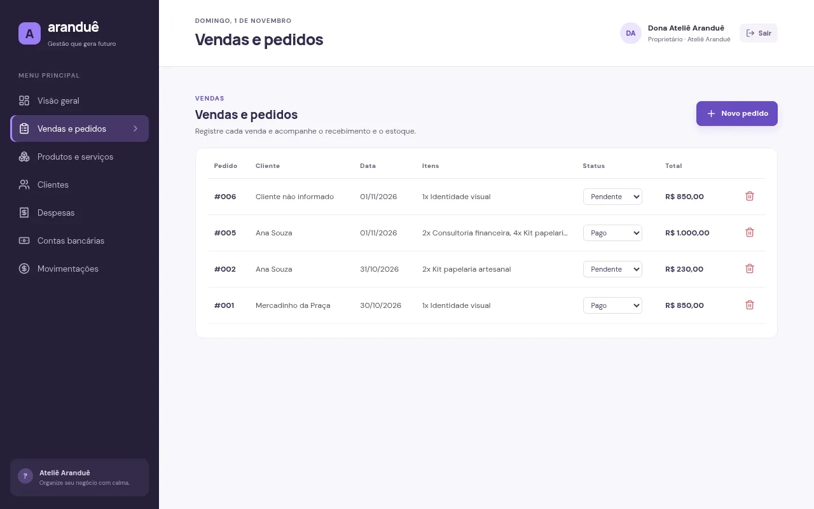

Telas



O problema
Muitos MEIs controlam vendas no caderno e o caixa de cabeça. Sem saber quanto entrou, quanto saiu e o que ainda falta receber, fica difícil precificar, planejar compras e crescer. O Aranduê reúne essas informações em uma interface pensada para quem não é da área de tecnologia.
O que já funciona
- Multiempresa Cada negócio tem sua conta; os dados de uma empresa nunca aparecem para outra.
- Papéis de acesso Proprietário, vendedor e contador veem e fazem apenas o que lhes cabe.
- Vendas e estoque Pedidos com vários itens baixam o estoque automaticamente e nunca vendem a mesma unidade duas vezes.
- Caixa sincronizado Pedido pago e despesa paga entram no caixa sozinhos; o saldo fica sempre coerente.
- Auditoria Registro de quem alterou o quê e quando.
- Responsivo Funciona bem no computador e no celular.
Como foi construído
O backend concentra as regras de negócio em uma camada de serviços que verifica a permissão e a empresa em toda operação. Os mesmos schemas de validação são usados no navegador e no servidor.
Segurança e qualidade
- 20testes automatizados de integração
- 100em acessibilidade no Lighthouse (celular)
- ~116 KBde JavaScript inicial (gzip)
- Senhas com Argon2id e sessão em cookie seguro, revogada no logout.
- Proteção contra CSRF e limite de tentativas no login.
- Testes que garantem que uma empresa não acessa dados de outra.
Próximos passos
- Orçamentos e equipe: orçamento que vira pedido, fornecedores e gestão de usuários.
- CRM e indicadores: funil de leads e KPIs, como ticket médio e limite anual do MEI.
- Assistente de IA: chat de ajuda e bot no Telegram com confirmação antes de gravar.
- Publicação: deploy em São Paulo e demo ao vivo nesta página.